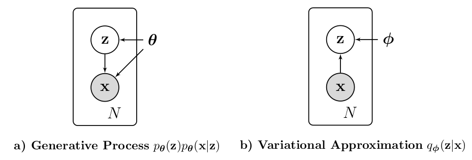
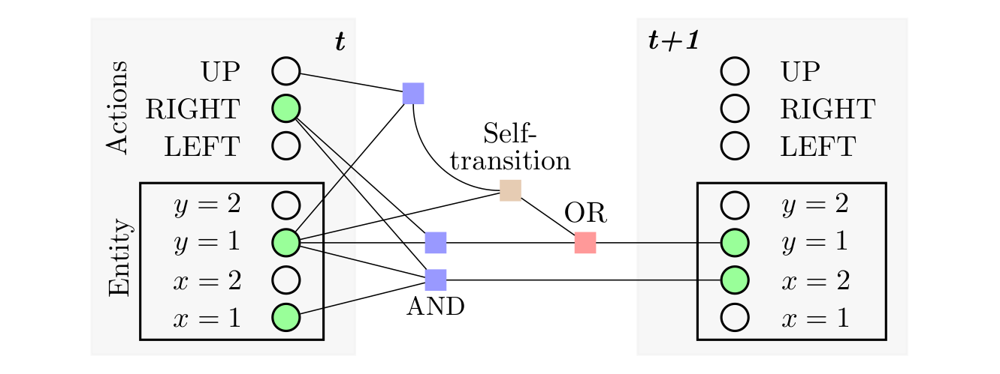
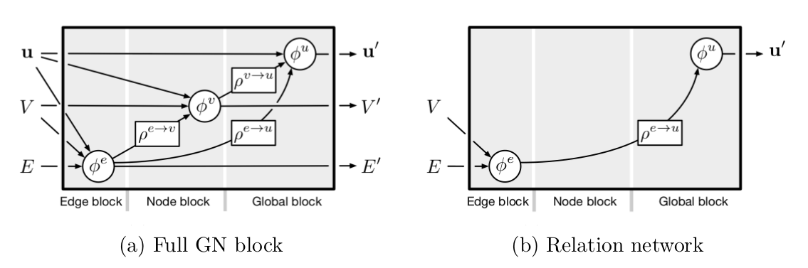

borea17
Home
About
Paper Summaries
Paper Summaries
Categories
All
(4)
dimensionality reduction
(1)
generalization
(1)
graph networks
(2)
interaction network
(1)
neural network
(1)
reinforcement learning
(1)
variational autoencoder
(1)
Paper Summaries

Auto-Encoding Variational Bayes
variational autoencoder
dimensionality reduction
Kingma and Welling (2013) introduced the Variational Auto-Encoder (VAE) to showcase how their Auto-Encoding Variational Bayes (AEVB)…
borea17
Jul 25, 2020

Schema Networks: Zero-shot Transfer with a Generative Causal Model of Intuitive Physics
reinforcement learning
Kansky et al. (2017) showed remarkable results of zero-shot transfer in several variations…
borea17
Jul 15, 2020

Relational Inductive Biases, Deep Learning, and Graph Networks
interaction network
graph networks
generalization
Few years after the IN paper, Battaglia et al. (2018) showed that the IN can be cast into a special case of a broader framework, termed
Graph Networks (GNs)
. They hypothesize that despite the recent successes in deep learning with minimal representational biases, key ingredients of human-like…
borea17
Jul 10, 2020
Interaction Networks for Learning about Objects, Relations and Physics
neural network
graph networks
Battaglia et al. (2016) introduce the
Interaction Network (IN)
as the first general-purpose learnable physics engine capable of zero-shot generalization in terms of varying configurations of objects and relations. The IN leverages…
borea17
Jun 26, 2020
No matching items